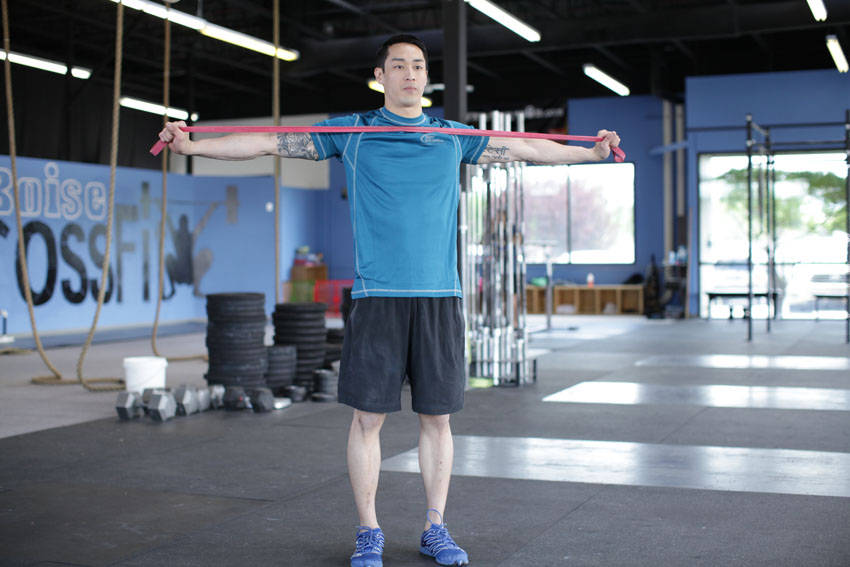

- Begin with your arms extended straight out in front of you, holding the band with both hands.
- Initiate the movement by performing a reverse fly motion, moving your hands out laterally to your sides.
- Keep your elbows extended as you perform the movement, bringing the band to your chest. Ensure that you keep your shoulders back during the exercise.
- Pause as you complete the movement, returning to the starting position under control.